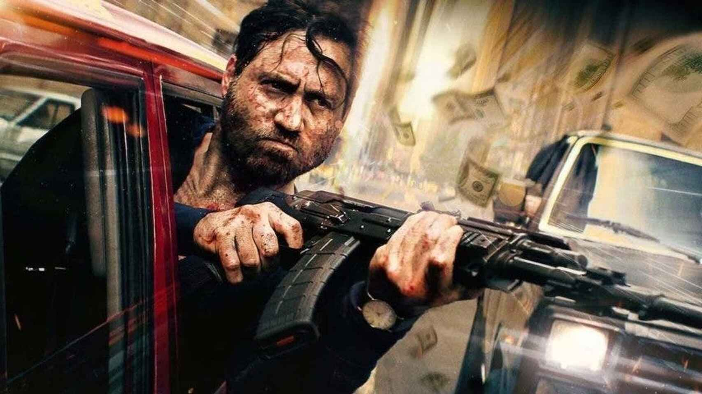

Peliculas de Acción
Es un género cinematográfico donde prima la espectacularidad de las imágenes por medio de efectos especiales
de estilo "clásico". La denominación es más un convencionalismo popular, que un género cinematográfico
puro acuñado por críticos, estudiosos o cineastas. Los elementos más frecuentes de una película de acción
son persecuciones (tanto a pie como con vehículos), tiroteos, enfrentamientos, artes marciales y luchas
callejeras, armas, explosiones, agresiones y cualquier situación violenta o intensa.
La trama suele estar basada en un conjunto reducido de clichés en los que se suele incluir:
- Un héroe o antihéroe. Casi siempre, sobre todo a partir de los años 1990, es un "antihéroe".
- Un villano y una banda criminal y/o terrorista.
- Una joven desvalida (que suele ser rescatada por el protagonista). Algo que cambiaría, primero
en el cine hongkonés y luego, a partir de los años 1980, serían "mujeres explosivas y luchadoras".
- Un actor secundario cómico (o un animal).
- Un final feliz (que generalmente incluye la unión o boda - in extremis - del protagonista con la chica)
con una "ruta hacia el horizonte"; al igual que sucedía en las películas del spaghetti western o "western
crepuscular".
Referentes del género
Los antepasados del género de acción están ya presentes en las primeras películas
mudas a través de ciertos rasgos y elementos característicos, como las persecuciones o tiroteos.
Es importante destacar a Ernest B. Schoedsack y El Malvado Zaroff (1932) por sus secuencias de
acción y un estilo parecido al travelling. Otro referente es Sam Peckinpah y su uso de tiroteos.
Fueron en los años 1960 los primeros tiroteos de la historia a través de cámara lenta generando
efectos especiales. También la exitosa saga Star Wars, en concreto La Guerra de las Galaxias (1977)
y El Imperio Contraataca (1980) junto a En Busca del Arca Perdida (1981) son precursoras de las escenas de acción.
- Aventura de acción o acción-aventura
- Estas películas se llevan a cabo en ubicaciones exóticas donde un héroe viaja
alrededor del mundo. Rambo, Indiana Jones, por ejemplo. Y ya desde el 2000,
la saga de Fast and Furious, The Transporter
- Comedia de acción
- Este subgénero incluye humor en la acción. Jackie Chan es el máximo exponente de este
"sub-estilo", ya que el grueso de su abundante cinematografía, está plagada de secuencias
donde predomina el humor "slapstick"
- Acción de terror
- Un subgénero que combina la intrusión de una fuerza malvada, evento o personaje sobrenatural
de terror con tiroteos y las persecuciones frenéticas del género de acción.
- Artes marciales
- Este subgénero incluye numerosos combates cuerpo a cuerpo entre personajes. Muchos de los papeles
son interpretados por artistas marciales. Es en este "estilo -propio-" donde más cantidad y mejores
cinematográficas han aportado al género.
- Espionaje
- El héroe suele ser un agente del gobierno que debe tomar una decisión en contra de otro gobierno.
- Películas de superhéroes
- Normalmente tienen elementos de ciencia ficción y fantasía, que se centran en las acciones de uno o más
superhéroes, que suelen poseer habilidades sobrehumanas y se dedican a proteger al público.